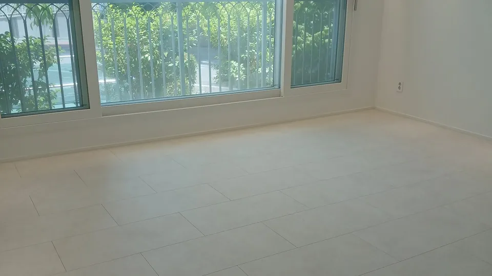
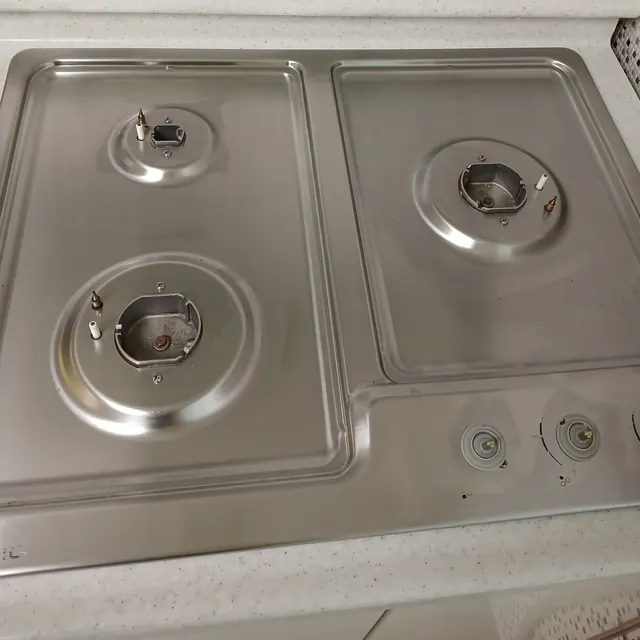
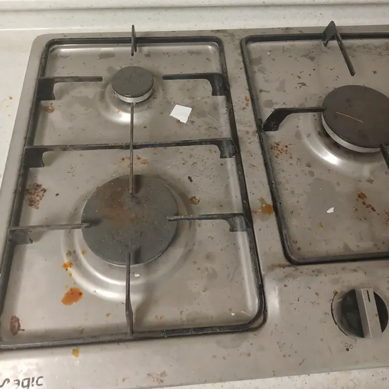

울산 입주청소 · 이사청소
울산 어느 동네든
직접 가서 닦습니다
울산 열정클린. 날짜를 잡으면 그 동네 현장으로 갑니다. 눈에 보이는 곳만이 아니라 서랍장 안쪽, 배수구, 환풍구까지 닦습니다.
- 울산 남구
- 울산 동구
- 울산 북구
- 울산 중구
- 울주
- 양산
열정클린은 어떤 곳인가요?
열정클린은 울산에서 입주청소와 이사청소를 하는 팀입니다. 남구 · 동구 · 북구 · 중구 · 울주와 양산까지 현장으로 직접 가고, 방충망 · 환풍기 덮개처럼 떼어 낼 수 있는 것은 떼어서 닦습니다.
- 상호
- 열정클린
- 업종
- 입주 · 이사 청소
- 서비스 지역
- 울산 남구 · 울산 동구 · 울산 북구 · 울산 중구 · 울주 · 양산
- 전화
- 대표 번호
같은 자리 · 같은 날
가스레인지, 작업 전과 후
손잡이를 옆으로 밀면 같은 가스레인지의 작업 전과 작업 후가 바뀝니다. 받침과 화구를 떼어 내고 닦은 자리입니다.
2024년 5월 28일 울산 현장 · 휴대폰 원본에서 자르기와 크기만 바꿨습니다.


SERVICE
맡기시는 일 세 가지
울산 열정클린. 날짜를 잡으면 그 동네 현장으로 갑니다. 눈에 보이는 곳만이 아니라 서랍장 안쪽, 배수구, 환풍구까지 닦습니다.
진행 순서
전화 한 통에서 마감까지
네 단계로 갑니다. 상담한 그 날짜에 그 동네 현장으로 갑니다.
- 1
전화 상담
평수와 집 상태, 입주인지 이사인지를 듣고 안내드립니다.
- 2
날짜 · 동네 확인
남구 · 동구 · 북구 · 중구 · 울주 · 양산 중 어느 동네인지와 날짜를 잡습니다.
- 3
현장 도착 · 분리 세척
방충망 · 환풍기 덮개 · 배수구 덮개처럼 떼어 낼 수 있는 것은 분리해서 닦고 다시 끼웁니다.
- 4
마감 확인
마감한 곳을 확인합니다. 현장마다 작업 사진을 남깁니다.
동네 고르기
어느 동네 집인가요?
동네를 누르면 그 지역 안내로 가는 길이 열립니다.
FAQ
자주 묻는 질문
울산 어디까지 와 주시나요?
울산 남구 · 동구 · 북구 · 중구 · 울주와 양산을 다닙니다. 그 밖의 지역은 전화로 날짜와 함께 여쭤봐 주세요.
무엇을 떼어서 닦나요?
방충망 · 환풍기 덮개 · 배수구 덮개처럼 떼어 낼 수 있는 것은 분리해서 닦고 다시 끼웁니다.
견적은 어떻게 나오나요?
평수와 집 상태, 입주인지 이사인지를 듣고 안내드립니다. 전화로 말씀해 주시면 됩니다.
상가나 정기청소도 맡기나요?
네, 상가와 정기청소 거래처도 맡고 있습니다. 방문 주기와 범위는 상담 때 정합니다.
전화 상담
열정클린 · 대표 번호